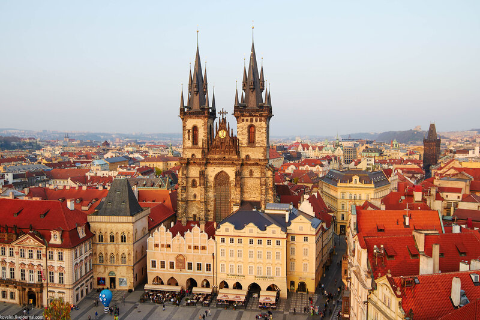

Прага — столиця Чехії та одне з найвідоміших міст Європи. Вона відома своєю архітектурою та старовинним центром.

Я обрав Прагу, тому що хотів би побувати там і побачити місто на власні очі.
Моя оцінка: 9/10
Додаткова інформація